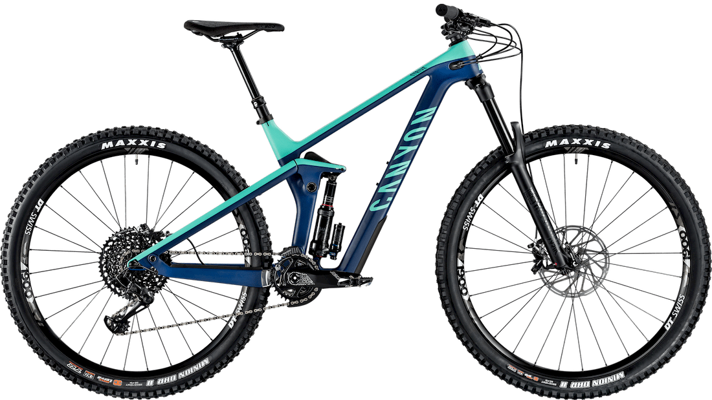
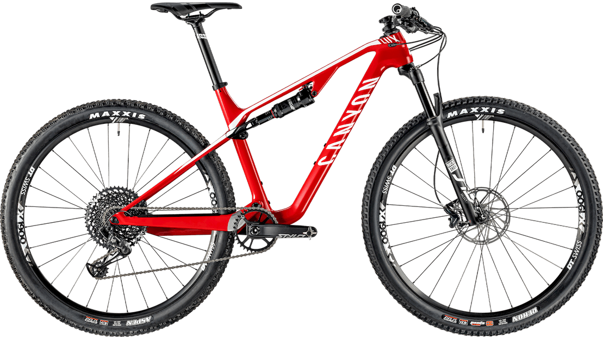

Touch responsive, easy to implement, fairly lightweight, and MIT
licensed. Good option for mobile menus, general content reveals,
or whatever else. Tried to mimic a native app menu as much as
possible.
The panel can be fixed to the screen, as above, or shown within a
container, as below (if not viewing on a mobile device). See the
github page
for all options.

Strive CF 7.0
We’ve taken everything that makes Strive awesome—the dialed,
four-bar suspension, completely carbon chassis, and Shapeshifter
technology—and delivered it at an equally awesome price. This
ain’t no “budget bike”. This is an all-out shredder.
The Strive’s revolutionary Shapeshifter system makes it one of
the most capable Enduro bikes around. Simply flick the
Shapeshifter’s handlebar-mounted remote, and the Strive’s
geometry and suspension change on the fly. In Uphill mode, you
get steeper angles and a firmer ride feel for more efficient
climbing. In Downhill mode the slacker head angle, lower center
of gravity, and a full 150 millimeters of rear suspension let
you rail the rowdiest descents with complete control.
If anyone in North America wants to go ride bikes in 2021 or late
2020, get in touch.

Lux CF SL 6.0
No corners cut, the Lux CF SL 6.0 features all the innovation
and technology from our top-level Lux CF SLX frame paired with a
RockShox 110 mm travel fork to increase its capability for trail
and marathon riding. Add space for two large water bottles for
all-day riding, internally routed double suspension lockout and
our new Flex Pivot suspension, and it’s ready to take on any XC
race.
Looking to start out in XC racing? With a SRAM NX Eagle 1x12
drivetrain with wide-range 10-50 cassette, powerful Level disc
brakes, racing-optimised RockShox suspension and fast DT Swiss
wheels, you’ll be ready come race day.
Exceed CF SL 7.0
Built around a lightweight carbon frame designed to the very
latest standards in mountain biking, the Exceed CF SL 7.0 looks as
fast as it rides. Add in a range of premium parts such as the
carbon wheels, 1x12 drivetrain and light, precise 100 mm fork, and
this bike is built to compete.
The highlights of this component set
Reynolds carbon wheels, SRAM/RockShox components with a 1x12
drivetrain, lightweight brakes and fork: the Exceed CF SL 7.0 is
ready for the start line.
Weighing around 1,500 g, RockShox SID Select fork is a true XC
racing favourite. With 32 mm lightweight aluminium stanchions,
DebonAir spring, Charger damper, and remote lockout, this fork
brings big performance anywhere you ride.
Pairing a 10-50 cassette with 500% gear range with a 34-tooth
chainring on a Truvativ Stylo 7K crank – this SRAM GX one-by setup
is versatile and precise, with SRAM’s signature flawless
performance and feel.